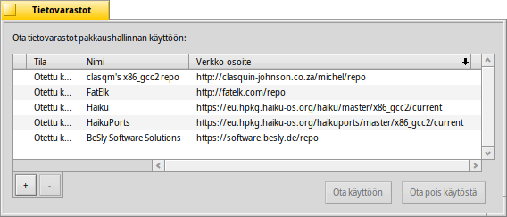

Tietovarastot
Tietovarastot
| Työpöytäpalkki: | ||
| Sijainti: | /boot/system/preferences/Repositories | |
| Asetukset: | ~/config/settings/Repositories_settings |
Tietovarastot ovat ohjelmistopakkausten kokoelmia. Oletuksena asetetaan Haiku-tietovarasto kaikille käyttöjärjestelmäpakkauksille ja HaikuPorts, joka tarjoaa laajan määrän sovitettuja ja kotoperäisiä Haiku-ohjelmia. Haiku-yhteistön jäsenten toimiessa kuraattoreina tarjolla on useita muita tietovarastoja. Tarkista Software Sites webbisivustolla.
Tämä on asetuspaneeli tietovarastojesi hallintaan (voit avata sen myös HaikuVaraston -valikosta):
Tunnettujen tietovarastojen luettelon ensimmäisessä sarakkeessa näytetään, että onko varasto tällä hetkellä käytössä. Jos sitä ei ole merkitty, HaikuVarasto tai pkgman-komentorivisovellus ei kysele sitä. Käytä valitun tietovaraston painikkeita tai , tai kaksoisnapsauta varastoa sen tilan vaihtamiseksi.
Tietovaraston käyttöönotto voi kestää muutamia sekuntia riippuen tietovaraston koosta ja internet-yhteyden nopeudesta. Jos se kestää kauemmin, sinulle kerrotaan avoimena olevasta tehtävästä pienessä teksti-ikkunassa painikkeiden yläpuolella. Jos se kestää epätavallisen kauan, sinua pyydetään perumaan tai yrittämään uudelleen.
Kykenet poistamaan tietovaraston kokonaan painikkeella "", sen on oltava pois käytöstä-asennossa.
Voit lisätä uuden tietovaraston ""-painikkeella, joka avaa tämän paneelin:
Uuden tietovaraston lisäämiseksi liitä vain sen verkko-osoite tekstikenttään. Se nimetään "Tuntematon"-nimellä, kunnes otat sen käyttöön.